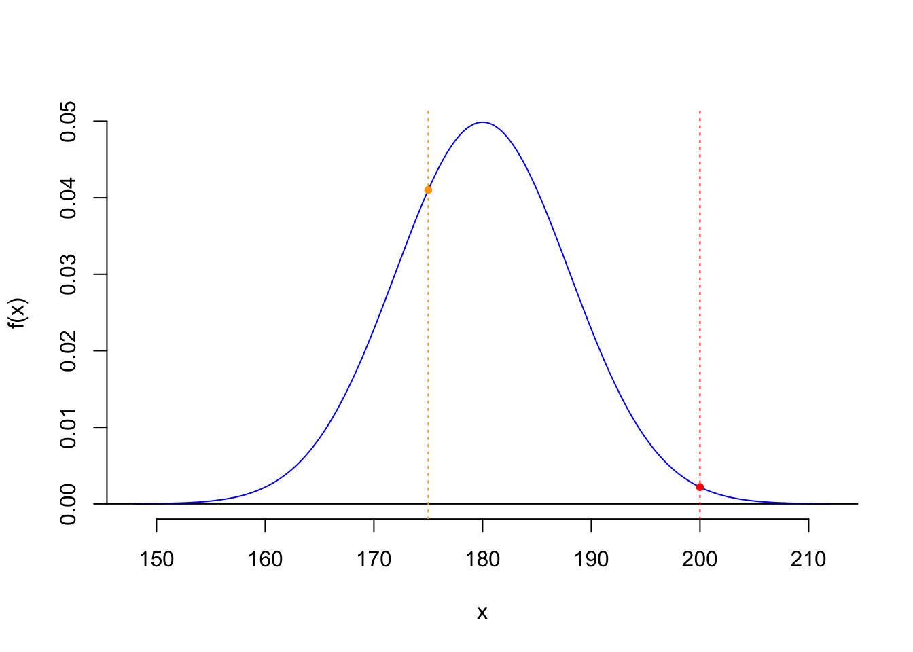
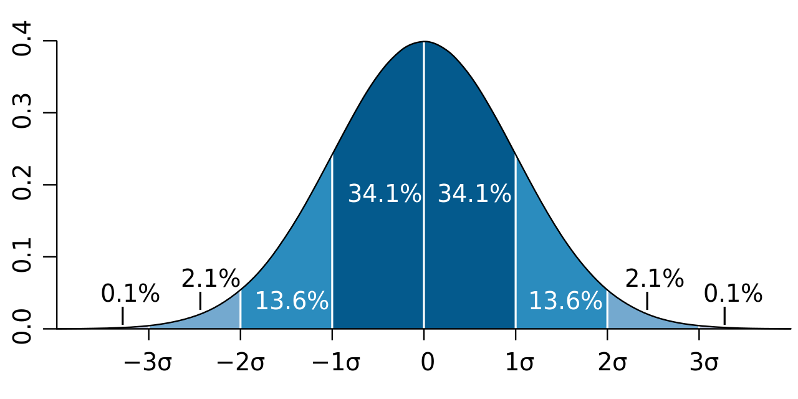
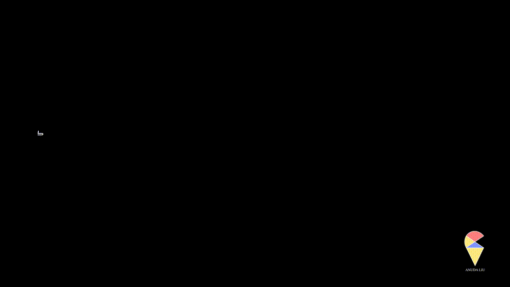
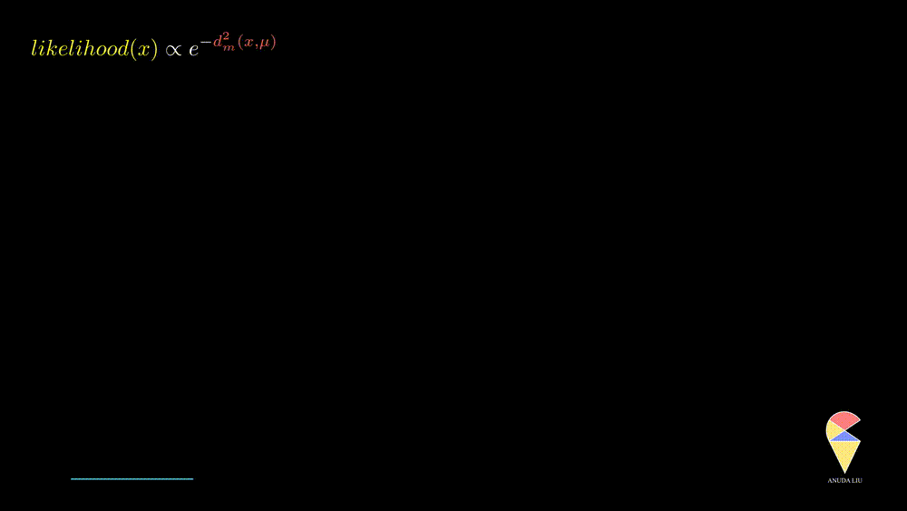
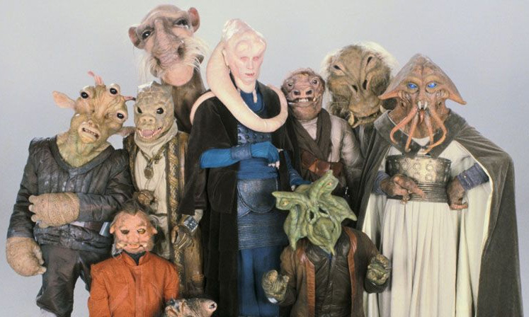

Introduction to Likelihood Analysis
In our daily lives, we often need to infer underlying patterns from observed phenomena. Whether it’s predicting the weather, analyzing the stock market, or studying the spread of diseases, statistics provides us with powerful tools for making such inferences. Among these statistical methods, one key concept is frequently used to help us understand and estimate these patterns: likelihood.
Simply put, likelihood is a way of quantifying the “support” for a given model. It tells us how likely a specific model or parameter is to be correct, given the observed data. Although “probability” and “likelihood” may seem similar, they have fundamental differences in both meaning and application. In this article, we will explore the basic concept of likelihood and its critical applications in statistics, including how it is used to estimate model parameters, select the best model, and even perform hypothesis testing.
Through simple examples and intuitive explanations, we aim to help you understand this omnipresent concept in data science and appreciate its powerful role in modern statistics.
1. Likelihood
Do you understand density functions? Have you ever wondered why the value of the density function at a single point for a normally distributed random variable is not zero, yet the probability that random variable takes a single point is zero? If you have these doubts, let’s explore them together in this section.
1.1 The Mystery of Probability Density Function
In statistics, we typically use Probability Mass Functions (p.m.f) and Probability Density Functions (p.d.f) to describe different types of random variables. Let’s start by discussing discrete random variables.
For a discrete random variable, such as flipping a fair coin, we use the Probability Mass Function (p.m.f) to describe the probability of each possible outcome. For example, let \(X\) be a binary distributed random variable representing the number of heads in a single coin toss. The p.m.f \(f(x) = p^{x}(1-p)^{1-x}\), where \(x = 1 \text{ or } 0\), gives the probability that the random variable \(X\) takes the value \(x\). For instance, if \(X\) represents the result of a coin flip, \(f(1) = 0.5\) indicates that the probability of getting heads is \(0.5\).
For continuous random variables, however, although we have a similar concept, i.e. one can use the Probability Density Function (p.d.f) to describe the distribution, the situation is not such straightforward as p.m.f. Suppose \(X\) is a continuous random variable with p.d.f \(f(x)\), then different from p.m.f example above, the value of \(f(a)\) doesn’t present the probability that random variable \(X\) taking value \(x\). As we know, the probability that a continuous random variable taking a specific value is just \(0\), i.e. \[ \Pr(X = a) = \int_{a}^{a}f(x)dx = 0 \] So, what is the meaning of this density value? Let’s take a more specific example. I think that on the streets of Sweden, you’re more likely to encounter someone around 175 cm tall than someone 200 cm tall. Whether or not you’ve been to Sweden, I believe you’ll agree with me. Suppose the height of adult Swedish man exactly follow the Normal distribution, with mean 180 cm and SD 8 cm.
The information conveyed by the density function aligns perfectly with our intuition. The density value at 175 is higher than that at 200, indicating that it is more likely to encounter a height of 175 than 200. In other words, the density function provides a measure of the likelihood of observing a certain value. However, when it comes to describing the concept of likelihood mathematically, your mind might immediately think of probability. Yet, in this context, we are not using probability to express likelihood but rather the concept of likelihood itself. In other words, we can answer the question before, that the meaning of density value is likelihood value. You might say I’m just playing with words here—aren’t likelihood and probability just different names for the same concept? Don’t they essentially mean the same thing? Not really. Let’s take a closer look.
1.2 Probability V.S. Likelihood
To understand the difference between these two concepts, let’s first analyze the following two scenarios.
Scenario 1: “Imagine you are standing in the square in the city center of Umeå, close your eyes for 30 seconds, then open your eyes and catch the first man you see. How likely is his height above 180 cm?”
Scenario 2: “You went to downtown last weekend. You stood in the square and closed your eyes, then after 30 seconds you opened your eyes and grabbed the man you saw first and measured his height. His height is 230 and you think it is unbelievable.”
Obviously, both scenarios involve descriptions of possibility, but their key terms determine that they are fundamentally different. The keyword in Scenario 1 is “imagine,” which suggests that this is merely a thought in our minds and has not actually occurred. In this case, we typically use probability to describe the likelihood of an event happening.
In contrast, the keywords in Scenario 2 are “went,” “stood,” and other past tense verbs, which imply that these are events that actually happened. Correspondingly, we use likelihood to quantify the possibility of observing this value under a certain model assumption. Therefore, the essential difference between probability and likelihood lies in whether they describe the possibility of an event or the possibility of an observation.
1.2.1 Probability: Quantifying Possibilities in a Rational World
In Scenario 1, the focus is on an event that has not yet occurred (“catching a man taller than 180 cm”). The key question is: “Given a known distribution, how likely is this event to happen?”
Calculating this probability relies entirely on a rational assumption: if men’s heights follow a normal distribution \(\mathcal{N}(180, 7^2)\), we use the probability density function to compute \(\Pr(X > 180)\).
Probability reflects a conceptual possibility that exists in the realm of thought, regardless of whether such an event actually occurs. In other words, probability belongs to the rational world of abstract reasoning and does not depend on real-world observations. In this sense, probability is a rational quantification of theoretical events. By assuming a model (e.g., a normal distribution), we derive the theoretical likelihood of an event. Even if the event never happens, its probability remains well-defined.
1.2.2 Likelihood: Evaluating Observed Data in Reality
In Scenario 2, the event has already occurred: you measured a height of 230 cm. The observation is a fixed fact, and the question becomes: “Given the assumed model (e.g., \(\mathcal{N}(180, 7^2)\)), how plausible is this observation?”
The likelihood function \(L(\mu, \sigma | X = x_0)\) quantifies how well this observation \(x_0\) aligns with the model. Unlike probability, likelihood is entirely dependent on the observed data. It evaluates the plausibility of the model given the data, rather than predicting hypothetical events. As mentioned earlier, for continuous random variables, the likelihood of an observation \(x_0\) can be quantified using the value of the density function, i.e. \(L(\mu, \sigma | X = 230) = f(230; \mu = 180, \sigma = 7)\), where \(f\) is the density function of normal distribution.
It is worth mentioning that the p.m.f of a discrete random variable represents both the probability of a single point and its likelihood. I summarize these discussions in the table below:
| Concept | Object | Discrete Variable | Continuous Variable | |
|---|---|---|---|---|
| Probability | Mathematical | Events | \(Pr(X = 1)\) p.m.f. | \(\Pr(X<b) = \int_{-\infty}^bf(x)dx\) |
| Likelihood | Statistical | Observations | \(Pr(X = 1)\) p.m.f. | \(f(x)\) p.d.f. |
1.3 Secret Messages behind Normal Density Function
You surely remember the previous question: what does the p.d.f of the normal distribution represent?
\[ f(x) = \frac{1}{\sigma \sqrt{2 \pi} } e^{- \frac{1}{2} \left( \frac{x-\mu}{\sigma}\right)^2 } \]
Or, to put it another way, just as the binary distribution aims to describe random events like coin tossing, what kind of random phenomenon is the normal distribution trying to describe?
Let’s start with en elementary understanding.
The normal distribution describes a bell-shaped, symmetric distribution of random phenomena, such as human IQ. Most people’s IQs are close to the mean, a smaller portion have higher or lower IQs, and only a very few have extremely high or low IQs. This forms a bell-shaped, symmetric distribution.
We can use more precise statistical terminology, such as confidence intervals, to describe this bell-shaped symmetric distribution of random phenomena. The normal distribution describes a random phenomenon where 68% of the probability is covered by the confidence interval of one SD around the mean, while the confidence interval of two SDs can cover 95% of the probability, and the confidence interval of three SDs can cover nearly all possibilities, as shown in the figure below.”

If you answer the question in such ways, then congratulations. You have rather good learning outputs from the previous basic statistics course. Next, let me introduce to you a deeper understanding based on the concept of likelihood. Let’s review the p.d.f of the normal distribution. Let’s watch an animation first.

Notice that \(\left(\frac{x-u}{\sigma}\right)^2\) is the normalized distance between an observation \(x\) and the center point \(\mu\). As mentioned before, the value of density function is the likelihood value of one observation, so the p.d.f is presenting the relationship between a specific observation \(x\) and its likelihood value. Then Normal distribution is describing such kind of random phenomenon:
The likelihood of an observation \(x_0\) is inversely proportion to the normalized distance between observed value \(x_0\) and the mean value \(\mu\).
More precisely, when the observed value is far from the center point, the likelihood of observing it will decrease rapidly, and this decrease is exponential, as displayed below.

In summary, the normal distribution essentially describes the relationship between the distance of observed values from the center point and likelihood within a class of random phenomena. It connects the geometric concept of distance with the statistical concept of likelihood.
2. Maximum Likelihood Estimation
When people are faced with a set of data observations about a variable, it’s natural for their first response to be to calculate the mean. But do you know the mathematical reasoning behind this choice? Let’s explore the question.
What is Maximum Likelihood Estimation? Let’s first take a look at the new question brought to us by the following scenario.

Scenario 3: “Last weekend, I was abducted by a small alien creature to an unfamiliar planet… They released me at a square in the center of town. I felt very bored so just grabbed a little male alien monster and measured his height at 125. Please kindly don’t ask me how to tell the difference between male and female and focus on the next question. What is the likelihood value of this observation?”
In this scenario, we are trying to evaluate the likelihood of observing an alien creature with a height of 125 cm. Unlike Scenario 2, the key term here is “unfamiliar planet”， meaning we cannot obtain information such as the mean and standard deviation from the statistical office of this planet.
Without this information, we cannot find an appropriate normal density function to calculate the corresponding density value. The mean and standard deviation are essential parameters for constructing a normal distribution, which allows us to quantify the likelihood of observing a particular height or value under that distribution. Without these, we lack a reference to model the underlying statistical process accurately, i.e. to calculate the corresponding density value.
Faced with this new problem, we must find a reasonable set of mean and standard deviation to define our normal distribution, in order to calculate the likelihood of observing a height of 125 cm. We need to do two things. First, we assume that the heights of the creatures on this planet follow a normal distribution. Of course, we have no strong confidence in this assumption, but we have to start somewhere, and the normal distribution is a good choice. Second, we need to gather more samples, that is, increase our sample size.
Based on the discussion above, let’s say we have a random sample of \(10\) alien creatures \(\left\{ X_1, X_2, \dots, X_{10} \right\}\), and we assume they follow normal distribution, \(f(x; \mu, \sigma)\). In this case, the likelihood of this random sample can be represented as \[ L(\mu, \sigma^2; x_1, \dots, x_{10}) = f(x_1,\dots,x_{10} | \mu, \sigma^2) = \prod_{i = 1}^{10} f(x_i, \mu, \sigma^2) \] The likelihood of this random sample is not determined, but a function of unknown parameters \(\mu\) and \(\sigma\), \(L(\mu, \sigma^2, | x_1, \dots, x_{10})\). We call this function as likelihood function.
Note:
The optimal estimation of the unknown parameters should be the values that maximize the likelihood function.
3. Likelihood Ratio Test
TBA